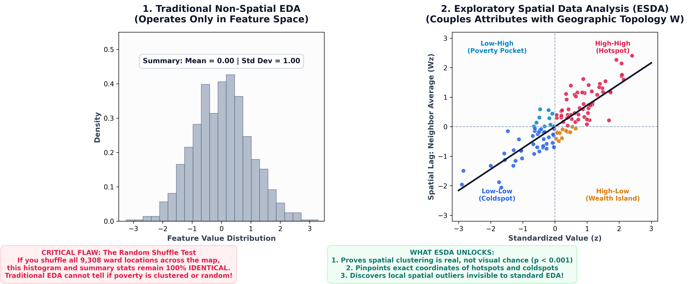

Spatial Econometrics, Geographically Weighted Regression (GWR/MGWR) & Decision Intelligence
Tobler's Law, Spatial Weights ($W$), Moran's $I$, LISA, Gauss-Markov assumptions, Spatial Autoregression (SAR/SEM/SDM), and Spatial Heterogeneity (GWR/MGWR).
Public Health Deserts, Malaria Epidemiology, Commercial Geomarketing, WASH Utility Equity, Infrastructure Siting, and Multi-Criteria Planning across 9,308 Wards.
In standard data science and econometrics, observations are assumed to be independent and identically distributed (i.i.d.):
When analyzing geographic units (e.g. 9,308 administrative wards), this assumption collapses due to Tobler's First Law of Geography (1970):
"Everything is related to everything else, but near things are more related than distant things."
• Biased Estimates: Attribute neighbor spillovers falsely to local features.
• Artificially Low Standard Errors: Inflated $t$-statistics producing widespread Type-I false discoveries.
• Stationarity Trap: Forcing a single global parameter across heterogeneous regions.
Policymakers routinely allocate capital based on national or state-level summary aggregates:
A state may record an affluent mean Relative Wealth Index of +0.42, yet contain 15 rural wards suffering acute structural poverty (-0.85) alongside a single hyper-wealthy urban enclave (+1.65). The aggregate average renders vulnerable populations statistically invisible.
Universal Healthcare Budgeting: Directing state grants based on statewide maternal mortality averages starves peripheral rural wards while over-subsidizing tertiary hospitals in state capitals.
Aspatial program evaluation assumes interventions in Ward $A$ remain isolated inside Ward $A$:
Wholesale Market Construction: An aspatial ROI model calculates only municipal tax generated within Ward $A$, ignoring 141% additional secondary wealth generated across adjacent boundary wards!
The Modifiable Areal Unit Problem (MAUP) dictates that statistical results change dramatically when boundaries are shifted or aggregated:
Aggregating 9,308 wards up to 774 Local Government Areas (LGAs) artificially inflates bivariate correlation coefficients ($r$) from 0.31 to 0.74. High aggregation smooths out local variance and creates spurious associations.
Redrawing administrative district shapes while holding unit count constant alters statistical sign and magnitude (e.g. electoral gerrymandering or redrawn health catchment areas changing disease rate calculations).
Methodological Antidote: Always model at the finest operational administrative unit (Ward level) and verify scale stability using multi-level or geographically weighted techniques.
Spatial EDA integrates geographic topology, proximity matrices, and spatial lag operators into exploratory discovery:

In standard EDA, an outlier is defined solely by distance from the global distribution mean ($z = \frac{x - \mu}{\sigma}$):
A ward is flagged as an outlier only if its wealth or disease rate exceeds $3\sigma$ from the entire national average. Misses localized deprivation inside wealthy metropolitan regions.
A unit that differs radically from its immediate spatial neighbors, regardless of where it falls in the national histogram:
The spatial weights matrix $W$ encodes geographic connectivity among all $n$ observational units:
Modeling Inter-Ward Trade Networks: Because administrative wards vary vastly in polygon area (from $0.2 \text{ km}^2$ in urban centers to $2,500 \text{ km}^2$ in rural areas), using $k\text{-NN} (k=5)$ provides robust, scale-invariant spatial weights.
Multiplying row-standardized $W$ by variable vector $y$ computes the spatial lag $[Wy]_i$:
Suppose Ward $i$ has 4 neighbors with wealth index scores: [+0.20, +0.60, -0.10, +0.50].
Under row standardization, each neighbor weight is $w_{ij}^* = 0.25$:
The spatial lag $[Wy]_i$ represents the average environmental context surrounding unit $i$.
Plotting standardized focal values $z$ on the horizontal axis against neighborhood lag $Wz$ on the vertical axis yields the Moran Scatterplot. The regression slope of this scatterplot is exactly equal to Global Moran's $I$!
Quantifies whether a variable clusters spatially across the entire study region:
Global Moran's $I$ confirms clustering exists; Anselin Local Moran ($I_i$) maps where each cluster is located:
Because Local Moran performs $n$ simultaneous hypothesis tests (9,308 tests), multiple testing adjustments (Bonferroni or False Discovery Rate FDR) are applied to avoid spurious cluster identification.
A Healthcare Desert is defined as a ward with a high population count (> median of 17,400 residents) but zero registered primary healthcare clinics.
Aspatial analysis calculates state clinic ratios (e.g. 1 clinic per 5,000 residents statewide) and assumes adequate coverage. Spatial overlay reveals severe geographic exclusion.
Deploy mobile clinical vans and prioritize the top 50 densest clinic-zero wards for new maternity clinic construction.
Zero registered primary health clinics nationwide (23.0% of all wards).
Acute Healthcare Deserts (High population & Zero clinics).
Malaria parasite prevalence ($Pf\text{PR}_{2-10}$) is not randomly distributed; vector breeding depends heavily on hydrology, elevation, and clinic density.
Local Moran LISA analysis identifies contiguous High-High malaria transmission corridors spanning cross-state geopolitical borders.
Synchronize cross-boundary Indoor Residual Spraying (IRS) and universal Long-Lasting Insecticidal Net (LLIN) campaigns along identified transmission corridors.
High spatial autocorrelation ($p \lt 0.001$) confirming vector clustering.
High-High transmission hotspots across river basin corridors.
Retail chains and banks frequently open branches in saturated commercial zones, resulting in margin cannibalization while leaving affluent wards unserved.
We construct a 4-Quadrant Commercial Matrix crossing Meta Relative Wealth Index (RWI) against local market density.
Focus commercial supermarket expansion and agency banking kiosks on Tier 2 (High Wealth, Low Competition) catchments.
High wealth, high market count. Fierce competition.
High wealth, low market count. Unmet purchasing power.
Nigeria exhibits a historic North-South religious institutional division, with a critical pluralistic Middle Belt region.
We model: (1) Church vs. Mosque institutional share $S_i$, and (2) Shannon Entropy Cultural Diversity Index:
Direct inter-faith peacebuilding grants and social cohesion programs to high-entropy transition corridors.
$H_i = 0$: Completely homogeneous.
$H_i = 0.693$: Perfect 50/50 balance.
Identifies high-coexistence transition corridors.
State-level GDP per capita obscures hyper-localized structural asset poverty. Using Meta high-resolution Relative Wealth Index (RWI) data, we compute Local Moran statistics for all 9,308 wards.
The LISA map delineates poverty coldspots (LL) and affluence hotspots (HH) across the country.
Channel federal social safety net cash transfers and subsidized agricultural inputs directly to Low-Low Coldspot Wards.
Low-Low Asset Poverty Coldspots.
High-High Affluence Hotspots.
Government agencies frequently deploy infrastructure in silos: water agencies build boreholes where health clinics are absent, leading to fragmented impact.
We formulate the Ward Priority Index (WPI) via Multi-Criteria Decision Analysis (MCDA):
Co-locate clean water boreholes, maternal clinics, and polling units in Tier 1 Critical Emergency Intervention Wards.
Top 25% acute infrastructure shortage (2,327 wards).
Self-sustaining urban wards.
In quantitative science, researchers often conflate the model with the estimator:
Linear Regression is a mathematical specification postulating that the conditional expectation of $y$ given $X$ is a linear combination of unknown parameters $\beta$:
It describes the data-generating process and functional form.
OLS is one specific computational optimization method that finds $\hat{\beta}$ by minimizing the sum of squared vertical residuals:
Alternative estimators for the exact same linear model include: Maximum Likelihood (MLE), Weighted Least Squares (WLS), Generalized Least Squares (GLS), and 2SLS / Instrumental Variables.
Key Takeaway: When spatial dependence or heterogeneity occurs, the linear relationship $y = X\beta + \epsilon$ may still hold, but OLS is no longer the correct estimator—we switch to Maximum Likelihood (SAR/SEM) or Local Weighted Least Squares (GWR)!
For OLS to be the Best Linear Unbiased Estimator (BLUE), all five conditions must hold strictly:
In spatial and geographic data, Assumption #5 is fundamentally violated by Tobler's First Law! Neighboring administrative wards share topography, climate, culture, and unmeasured infrastructure.
When Assumption #5 breaks, OLS is no longer BLUE: its variance is not minimal, and standard errors are heavily distorted.
Before running spatial econometrics, we must verify that explanatory predictors $X$ are not mutually redundant:
Urban Density vs Market Access: In Nigerian wards, raw population count and building footprint counts correlate at $r=0.88$. Combining them into per-10k facility rates lowers VIF from 14.2 down to 1.84, ensuring stable regression coefficients!
Standard OLS inference requires assessing residual normality and homoskedasticity:
• $S$: Residual skewness (0 for normal).
• $K$: Residual kurtosis (3 for normal).
• $H_0$: Errors are normally distributed.
• Interpretation Range: If $p \lt 0.05$ ($\text{JB} \gt 5.99$), reject normality. In spatial data, extreme outliers create heavy tails, requiring robust estimators.
• Regresses squared residuals $e_i^2$ on predictors $X$.
• $H_0$: Error variance is constant ($\sigma_i^2 = \sigma^2$).
• Interpretation Range: If $p \lt 0.05$, heteroskedasticity is present. Indicates that model error variance varies across space, signaling the need for GWR or spatial error modeling.
Because spatial units share geography, error terms across neighboring units covary strongly:
Testing OLS residuals on Nigerian ward wealth models yields Residual Moran's $I = 0.482$ ($p \lt 0.0001$):
If neighboring wealth spills over into focal ward wealth, OLS parameter estimates $\hat{\beta}$ are biased and inconsistent. OLS falsely credits local clinic presence with wealth created by regional trade!
If unobserved regional shocks cluster spatially, OLS standard errors are severely underestimated, producing artificially high $t$-statistics and declaring non-existent policy interventions as statistically significant.
How do we mathematically decide which spatial model specification to deploy?
• Robust LM-Lag > Robust LM-Error → Deploy Spatial Lag Model (SAR).
• Robust LM-Error > Robust LM-Lag → Deploy Spatial Error Model (SEM).
• If both robust statistics remain highly significant → Estimate the Spatial Durbin Model (SDM).
• Always verify selection with the lowest AIC and highest Log-Likelihood.
Incorporates the spatial lag of the dependent variable directly as an endogenous regressor:
In a spatial lag model, an investment in Unit $i$ radiates through neighboring feedback loops:
A \$1,000,000 capital grant invested into wholesale commercial markets in a central hub ward produces \$1,000,000 in direct local wealth plus \$1,405,000 in indirect wealth across neighboring communities through geographic spillovers!
Captures spatial dependence operating through unobserved regional variables and geographic noise:
Nests both endogenous outcome lag ($Wy$) and exogenous predictor spillovers ($WX$):
Education & Healthcare Capital Planning: If a neighboring ward builds a secondary school or hospital ($WX$), its physical presence directly improves living standards in your ward ($\gamma$), while their rising overall health ($Wy$) further stimulates your community ($\rho$).
All global models (OLS, SAR, SEM, SDM) operate under the assumption of spatial stationarity:
In real-world geographic processes, the relationship between $X$ and $y$ changes across space:
We transition from global regression to local spatial regression: Geographically Weighted Regression (GWR) and Multiscale GWR (MGWR).
GWR allows regression parameters to vary locally at each geographic coordinate $(u_i, v_i)$:
At each target ward $i$, parameter vector $\hat{\beta}(u_i, v_i)$ is solved using local spatial weights $W(u_i, v_i)$:
Observations near ward $i$ receive higher weights; distant observations receive near-zero weights.
Subsidized Seed & Fertilizer Distribution: In arid northern wards, agricultural fertilizer yields a $\hat{\beta} = +2.40$ boost in crop output; in wetland coastal wards, excess fertilizer causes runoff with $\hat{\beta} = -0.15$. GWR reveals these vital local policy variations!
The kernel weighting function $w_{ij}$ and its bandwidth $b$ dictate how local influence decays over distance:
Golden section search optimizes bandwidth $b$ by minimizing the Corrected Akaike Information Criterion (AICc):
• Small Bandwidth: High local flexibility, but excessive variance and potential overfitting.
• Large Bandwidth ($b \to \infty$): Low variance, but approaches the global OLS model (underfitting).
Standard GWR enforces the assumption that all $p$ relationships operate at the exact same spatial bandwidth:
Epidemiological Policy Planning: MGWR proves that clinic accessibility operates at a local micro-scale ($k=52$ wards), while annual rainfall operates at a regional meso-scale ($k=850$ wards), and national health insurance operates at a global scale ($k=9,308$ wards)!
Unlike global regressions that produce a single summary table, GWR yields spatial data surfaces:
• AICc Reduction: A drop of $\gt 3$ points over OLS confirms superior explanatory performance.
• Residual Autocorrelation: GWR eliminates spatial autocorrelation in residuals (Moran's $I \to 0$), verifying that local spatial structure has been fully captured.
| Model Class | Formulation | Parameter Range | Spatial Assumption | Real-Life Applied Use Case |
|---|---|---|---|---|
| OLS (Classical) | $y = X\beta + \epsilon$ | $\beta \in (-\infty, +\infty)$ | Spatial independence ($\text{Cov}=0$) | Aspatial baseline; valid only when residual Moran's $I \approx 0$. |
| Spatial Lag (SAR) | $y = \rho Wy + X\beta + \epsilon$ | $\rho \in (-1, 1)$, $\text{Mult} = \frac{1}{1-\rho}$ | Endogenous behavioral spillovers | Geomarketing retail pull, crime contagion, epidemic transmission. |
| Spatial Error (SEM) | $y = X\beta + u, \; u = \lambda Wu + \epsilon$ | $\lambda \in (-1, 1)$ | Unobserved regional shocks | Regional soil quality, shared power grids, climate shocks. |
| Spatial Durbin (SDM) | $y = \rho Wy + X\beta + WX\gamma + \epsilon$ | $\rho, \gamma \in (-1, 1)$ | Endogenous + contextual spillovers | Neighboring hospital or school investments boosting focal welfare. |
| GWR (Local) | $y_i = \beta_0(u_i,v_i) + \sum \beta_k(u_i,v_i)x_{ik} + \epsilon_i$ | Local $\hat{\beta}_k(u_i,v_i)$, Bandwidth $b$ | Spatial heterogeneity (non-stationarity) | Targeted fertilizer subsidies or regional health clinic investments. |
| MGWR (Multiscale) | $y_i = \sum \beta_{bw_k}(u_i,v_i)x_{ik} + \epsilon_i$ | Variable-specific bandwidths $bw_k$ | Multi-scale spatial heterogeneity | Separating hyper-local clinic access from macro-scale climate drivers. |
| Model Specification | Log-Likelihood | AIC / AICc | Schwarz BIC | $R^2$ / Pseudo $R^2$ | Spatial Parameter | Residual Moran's $I$ |
|---|---|---|---|---|---|---|
| OLS (Classical Baseline) | -5,812.4 | 11,636.8 | 11,679.6 | 0.2841 | N/A | $I = 0.482$ ($p \lt 0.0001$) |
| Spatial Lag Model (SAR) | -3,941.2 | 7,896.4 | 7,946.3 | 0.5318 | $\rho = 0.5842$ | $I = 0.041$ ($p = 0.082$) |
| Spatial Error Model (SEM) | -3,884.6 | 7,781.2 | 7,824.0 | 0.5462 | $\lambda = 0.6124$ | $I = 0.023$ ($p = 0.145$) |
| GWR (Adaptive Bisquare) | -3,512.8 | 7,104.2 | 7,215.1 | 0.6840 | Bandwidth $k=128$ | $I = 0.008$ ($p = 0.412$) |
Core Empirical Insights:
• Incorporating spatial autoregression (SAR/SEM) drops AIC by over 3,740 points.
• Moving from global models to local GWR boosts explained variance to 68.4% and eliminates residual spatial clustering ($I \to 0.008$).
Construct spatial weights matrices $W$, calculate Global Moran's $I$, generate LISA cluster maps, and diagnose healthcare deserts.
Distinguish Linear Regression vs OLS, test Gauss-Markov assumptions (JB, BP, VIF), and estimate SAR, SEM, and SDM models.
Formulate local WLS, optimize adaptive kernels and bandwidths, run GWR/MGWR, and map local parameter surfaces.
Plot infrastructure Lorenz curves, compute Gini coefficients, build the Ward Priority Index (WPI), and deploy decision tiers.